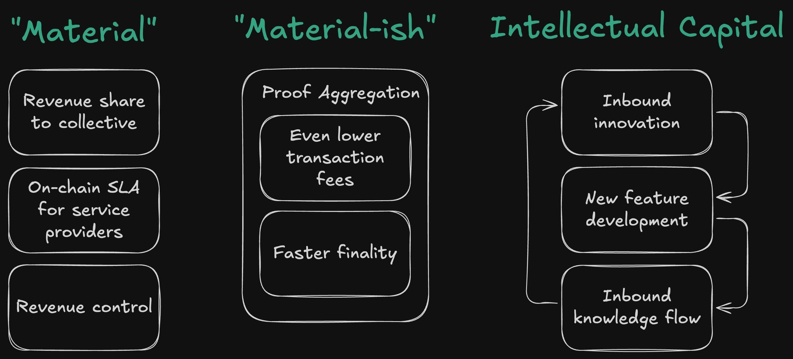

Have you ever walked into a sushi bar and uttered the magic word "Omakase"? You're telling the chef, "I trust you—serve me your best." Now, imagine applying that level of bespoke service to and delivered by the Starknet ecosystem. Welcome to Starknet's App Chain Omakase.
ELI5: What Is an App Chain?
Before we explore the smorgasbord of possibilities, let's define an app chain in the simplest terms (almost ELI5).
An app chain is a specialized blockchain designed to extend or "scale" a primary blockchain by providing additional blockspace tailored for specific applications. Think of it as a custom side road that eases traffic from the main highway but is built specifically for certain types of vehicles. By definition, an app chain is application-specific; it doesn't aim to be a one-size-fits-all solution like general-purpose blockchains.
For my visual friends, here's what an app chain looks like (note: not quite ELI5 and not entirely correct either)
The Semantic Soup of App Chains
The term "app chain" often gets tossed around with little clarity, leading to confusion about what they truly offer. Semantics matter—a lot. Starknet, however, isn't confined to a single type of app chain (for developers, there's flexibility on the choice of framework; more on this later). It could offer an Omakase experience, providing a customizable experience tailored to diverse needs.
Contextualizing The Semantic Soup
We need context to appreciate the large set of possible app chain types that can exist on Starknet. These things come to mind when trying to better understand an app chain, but it is not an exhaustive list (i.e. I've avoided things like settlement and data availability to keep this post a little shorter!)
Audience Size--Who Is It For?
- One User--Imagine a co-processor designed just for you. It's like having a personal blockchain assistant that handles your computations privately. This is great for personal games played locally.
- A Small Group--This is a collaborative environment where a select few can perform extensive computations together. A good example is Battle royale games, which have a small group of players but require low latency for gamers in a specific region.
- A Large Community--The app chain here serves a broad user base, similar to hosting a public festival where everyone is invited.
Purpose--What Is It For?
- Single Contract--The app chain focuses on a specific contract that might be resource-intensive on the main chain. One level lower, an app chain could extend a particular part of a contract's storage; for example, it could be spun up for one highly active prediction market.
- Subset of Contracts--It caters to a specific set of contracts, providing a secondary blockspace market for them.
- Entire Network Extension--The app chain aims to expand the blockspace of an already saturated market. However, this raises questions about fragmenting ecosystems—for example, does having UniSwap on Optimism and Base further fragment liquidity? This isn't part of the app chain genre; these are more general-purpose rollups.
Visibility--Is It Public or Private?
- Public--Everything is transparent and visible to all—no secrets here.
- Hybrid Public & Private--Some elements are public, others are private, but you can always see your footprint.
- Private--Only you have access to your on-chain footprint.
Accessibility--Where Is It Based?
- Local--The app chain operates on your personal device (e.g., mobile, laptop, or at-home server). Ideal for games or heavy computations that are relevant only to you.
- Regional--Accessible to participants within a specific geographical area, similar to AWS regions' operations.
- Global--Open to users worldwide, ensuring everyone has the same state information at all times.
Lifespan--How Long Will It Live?
- Ephemeral--Spun up when needed and shut down after fulfilling its purpose—like a pop-up store.
- Permanent--Designed to operate indefinitely, with no planned shutdown.
Configuration--Does the Chain Change?
- Block Time--This can be faster or slower, depending on requirements.
- Block Size--This may vary to accommodate different transaction types but can be closely tied to block time.
- Developer Personas--Kakarot App Chains tailored for Solidity developers. Dojo/Katana App Chains geared towards game developers. Starknet-Equivalent App Chains optimized for Cairo developers.
TL;DR - the app chain solution space is immense.
Value Accrual & The Economics of App Chains
Regarding app chains, discourse on value accrual quickly turns to based numbers on a balance sheet. It isn't all about that. This Omakase app chain experience offers multiple avenues for "material" and "material-ish" value accrual. 
"Material" Value Accrual
- Collective Treasury--Similar to the Superchain model, app chains on Starknet could opt-in to contribute a percentage of transaction fees (e.g., 2%) or on-chain revenue (e.g., 15%) to a shared treasury governed by the community.
- Service Providers--Operators like "Rollup-as-a-Service" (RaaS) or prover operators could deploy Service Level Agreements (SLAs) that directly benefit the ecosystem, possibly in a DePIN manner that accrues value to the Starknet ecosystem.
- Developer Revenue Control--App chains empower developers with greater command and control over generating revenue, promoting sustainability and longevity for their projects—a win-win for the entire ecosystem.
- Other ideas include Fee Burns et al., but I have yet to think much about this.
"Material-ish" Value Accrual
Starknet's transaction fees are trending toward zero. By aggregating block proofs from multiple Cairo chains and using aggregator solutions like SHARP, the verification costs are shared, leading to faster finality and lower fees for users. Lower transaction fees mean users retain more value, enhancing the overall attractiveness of the ecosystem.
Building Moats with Intellectual Capital
App chains on Starknet are more than technical infrastructures; they are incubators for innovation. As innovation sandboxes, they allow developers to exercise significant sovereignty over the platform's configuration and stack, allowing them to experiment with new ideas that Starknet may not currently support given network constraints (like transaction and block size limits). These sandboxes can lead to breakthroughs that benefit the Starknet ecosystem, attracting users and migrating TVL.
Inbound Innovation & The Flow of Knowledge
Innovation sandboxes like Madara and Katana can be one of many options for app chain builders in the Starknet ecosystem. Supporting diverse app chain stacks is yet another way to provide greater flexibility and opportunity to Starknet ecosystem developers.
- Cairo App Chains--StarkEx, Madara, and Katana are all part of the Cairo family.
- Beyond Cairo--Thanks to Garaga (shoutout to Felt!), Starknet can efficiently verify proofs from foreign proving systems. For Starknet app chain developers, verifying Risc0, Circom, and Noir is possible. Even frameworks like OP Succinct chains or Protokit and Zeko from the o1js/Mina ecosystem are possible app chain frameworks Starknet could verify in the future.
Intellectual capital is more likely to accrue and be sticky when there is an opportunity to be flexible and participate in the cross-pollination of ideas. A "Starknet App Chain Omakase" scenario creates a positive feedback loop driven by openness to innovation to embed intellectual capital in the Starknet ecosystem. Where else would you find Cairo, Noir, and o1js/Kimchi app chains and being interoperable?